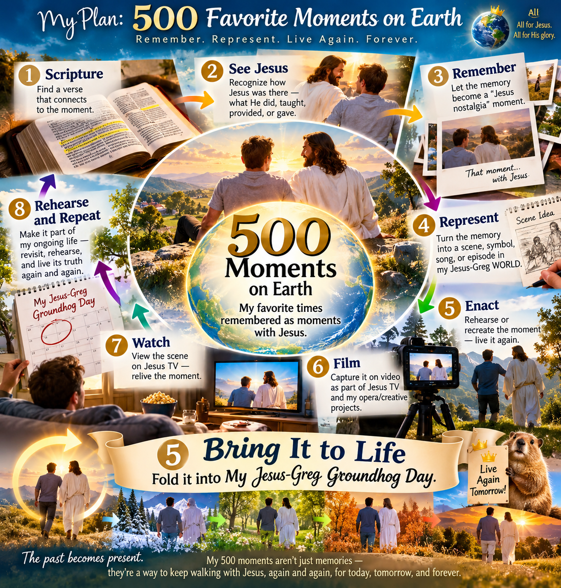

My 500 Favorite Times on Earth
An Invitation to Remember—and Maybe Build With—Your Favorite Times Too
I have a plan.
I want to identify 500 of my favorite times on Earth.
Not necessarily the 500 most important events of my life. Not the events that would make the official autobiography. Just 500 times when, looking back, I can say:
“I am glad I was alive for this.”
A childhood afternoon. A conversation. A road trip. A song. A meal. A person. A ridiculous moment. A beautiful place. Falling in love. Working. Playing. Learning something. Getting through something. Seeing something I never forgot.
500 times when being alive was particularly worth it.
I'm going to do this.
And I'm inviting my family and friends to consider doing it too.
But here's an important disclaimer:
You Don't Have to Do It Like Me
In fact, you probably shouldn't.
I'm going to turn mine into My Jesus-Greg WORLD because, well, that's what I do.
There will probably be scripture, songs, pictures, webpages, objects, rooms, AI, videos, Jesus TV, opera scenes, strange rituals, Groundhog Day repetitions, and who knows what else.
That's my implementation.
Yours doesn't need any of that.
Maybe you make a list.
Maybe you make a photo album.
Maybe you record 500 two-minute stories.
Maybe you make a private website.
Maybe you tell your children.
Maybe you put memories on index cards in a box.
Maybe you connect each memory to a song.
Maybe you do 100 instead of 500.
Maybe you just start with ten.
The method isn't the point.
The remembering is.
Remember How Merciful the Lord Hath Been
There is an ancient idea underneath my experiment.
Remembering.
Moroni gives an intriguing instruction before his famous invitation to ask God. He tells us to “remember how merciful the Lord hath been” and to “ponder it in your hearts.” (Moroni 10:3)
That fascinates me.
Before asking for MORE light, Moroni essentially says:
Look backward.
Remember what God has already done.
Then ponder it.
That's one reason my 500 Favorite Times project has become more than a nostalgia exercise for me.
I want to deliberately identify hundreds of moments when life was especially good, beautiful, funny, surprising, meaningful, loving, difficult-but-redemptive, or simply worth being alive for.
And then I want to ask:
Jesus, where were You in that?
That's my question.
You may have another.
But the first question is one almost anyone can ask:
What have been my favorite times on Earth?
A 500-Part Love Letter to Jesus
There is another reason I'm doing this that may be even more important.
I want my collection of 500 memories to become a kind of love letter to Jesus.
Not a love letter written once and finished.
A love letter that might take the rest of my life to write.
Every memory gives me another reason to turn toward Jesus and say:
“Hey, Jesus, remember when You and I…?”
Remember when we were there?
Remember that person?
Remember that trip?
Remember that ridiculous thing that happened?
Remember how scared I was?
Remember how beautiful that was?
Remember when I didn't even realize You were there?
Thank You for being there with me.
Thank You for letting me have that experience.
Thank You for that person.
Thank You for that day.
Thank You for my life.
That changes the project for me.
I'm not merely cataloging 500 things that happened to Greg.
I'm trying to build a framework for an ongoing conversation with Jesus for the rest of my life.
Each memory becomes a conversation starter.
And maybe that's another way to understand Moroni's invitation to remember how merciful the Lord has been.
Remembering can become talking with God about what you remember.
Here's My Invitation
Try it.
Start naming them.
Don't worry about ranking them. Don't worry whether something is profound enough to qualify.
Capture the memory before you lose it.
Your first bicycle.
The summer you spent with Grandma.
That ridiculous night with your friends.
The birth of a child.
A dog you loved.
A teacher who saw something in you.
A Christmas morning.
The concert.
The touchdown.
The terrible vacation that became a great family story.
The first apartment.
The night somebody said exactly what you needed to hear.
The view from the mountain.
The meal you can still taste.
The day you realized you were going to survive something you weren't sure you could survive.
Name it.
That's the hook in this experiment that I think may be nearly universal.
You don't need Jesus TV to do that.
You don't need My Jesus-Greg WORLD.
You don't need an opera.
You don't even need to agree with how I interpret my own memories.
Just start asking:
What were my favorite times here?
What I'm Going to Do With Mine
This is where my path gets more peculiar.
I don't want merely to make a list of my 500 memories.
I want to build with them.
Human beings spend enormous amounts of time and money acquiring experiences. We travel. Fall in love. Raise children. Make friends. Listen to music. Build things. Worship. Work. Eat extraordinary meals. See beautiful places. Have adventures.
And then something peculiar happens.
It ends.
We take pictures.
Maybe we tell the story occasionally.
Then we move forward.
But people who build virtual worlds do something very different.
They create reusable assets.
A landscape, character, piece of music, object, story, symbol, room, or experience is deliberately constructed and placed into a world where it can be encountered repeatedly.
That gave me an idea:
“Why not treat the best experiences of an actual human life as reusable world-building assets?”
Instead of asking only:
What were the best moments of my life?
I'm also asking:
How can I install some of those moments into the world I live in now?
And because this is a love letter, there's another question underneath that one:
How can I make these memories part of my ongoing conversation with Jesus?
My Eight-Step Experiment
Here's how I'm planning to do it.
This is not an instruction manual for everybody else. Think of it as me going first.
Take whatever is useful. Change whatever you want. Ignore the weird parts.
1. Scripture — Connect the Memory
I'll find scripture that connects with the experience.
My autobiography starts talking to scripture, and scripture starts talking back to my autobiography.
You could connect yours to scripture—or poetry, music, family history, photographs, literature, philosophy, or nothing at all.
2. See Jesus — Look Again
I'll revisit the memory asking:
Where was Jesus in this?
What did He give me? Who did He give me? What did I learn, love, survive, discover, or receive?
This is what I call:
Jesus Nostalgia.
A favorite memory becomes a favorite memory with Jesus.
Maybe I recognized Him at the time.
Maybe I didn't.
Either way, the memory gives Jesus and me something to talk about now.
Again, that's my lens.
You use yours.
3. Remember — Re-enter the Experience
Ordinary remembering is mostly accidental.
A smell. A photograph. A song.
I'm going to make remembering deliberate.
I'll recover photographs. Find the music. Write down details. Talk with people who were there.
In Moroni's language:
Remember it—and ponder it.
And sometimes simply say:
“Hey, Jesus, remember this?”
4. Represent — Give the Memory a Body
Then I'll turn some memories into things.
Pictures.
Songs.
Webpages.
Objects.
Signs.
Meals.
Stories.
Props.
Videos.
AI-generated images.
Scenes in my opera.
At this point:
Memory becomes media.
And once a memory has a representation, I can put it somewhere.
It can inhabit my world.
5. Bring It to Life — Fold It Into My Jesus-Greg Groundhog Day
This is where my particular experiment gets unusual.
I'm going to take some of these memories and fold them into the repetitive structure of my everyday life:
My Jesus-Greg Groundhog Day.
A memory might become connected to waking up.
Another to my pillow.
Another to showering.
Breakfast.
A doorway.
Driving.
Working.
Eating.
Praying.
Going to church.
Going to bed.
The memory gets an address.
Instead of merely storing it somewhere, I encounter it.
And every encounter creates another opportunity to say:
“Thank You, Jesus. I remember.”
6. Film — Capture Some of It
Some of those enacted memories will become video.
Physical life feeds digital life.
Digital life then feeds physical life again.
I become participant, performer, documentarian—and eventually audience.
7. Watch — Put It on Jesus TV
Some of those representations enter what I call Jesus TV—my personal stream of images, music, video, scripture, memories, imagination, and experiences through which I practice seeing my life with Jesus.
Something from 1972 can sit beside something from yesterday.
A childhood memory can sit beside scripture.
An old song can become part of today's scene.
Chronological time becomes less important than meaningful time.
8. Rehearse & Repeat — Live With It Again
Finally, I'll bring the memory back into ordinary life.
Watch it.
Sing it.
Walk past it.
Eat it.
Tell it.
Perform it.
Rehearse it.
Modify it.
Talk with Jesus about it.
Connect new experiences to it.
The process becomes recursive:
Life → Memory → Jesus → Meaning → Representation → Environment → Enactment → Conversation → Life
And around I go.
But You Don't Need My Groundhog Day
This may be the most important part of the invitation.
I'm not inviting you into my system.
I'm inviting you to consider the question that produced my system.
What have been your favorite times on Earth?
Your answer might lead somewhere completely different.
Maybe your 500 memories become something you leave your grandchildren.
Maybe they become 500 photographs.
Maybe once a week at dinner your family pulls one memory from a jar.
Maybe you call somebody who shared the memory and say, “Do you remember when...?”
Maybe your memories become paintings.
Maybe they become prayers.
Maybe they become nothing more than a list on your phone that occasionally makes you smile.
That's enough.
I'm going to lead by example rather than prescribe the outcome.
I'll build mine in public.
You can watch me experiment, steal whatever works, discard whatever doesn't, and build something that looks nothing like mine.
Why Groundhog Day?
For me, the experiment ultimately concerns repetition.
Most of life is already repetitive.
Same bed.
Same bathroom.
Same kitchen.
Same doors.
Same roads.
Same meals.
Same screens.
Same routines.
We spend enormous energy trying to escape repetition.
But perhaps there is another possibility:
“Don't merely escape repetition. Populate repetition with meaning.”
If I'm going to walk through this doorway another 5,000 times, what should that doorway remind me of?
If I'm going to wake up another few thousand mornings, what should waking mean?
And if I want to talk with Jesus for the rest of my life, what are we going to talk about?
Well, for one thing:
We have a lot of history together.
Five hundred favorite memories gives us a pretty good place to start.
The mundane environment becomes an interface.
My memories become conversation starters.
And my 500 Favorite Times become part of the content of everyday life.
You may do something completely different with yours.
Start With the Memories
Maybe all the world-building stuff interests you.
Maybe none of it does.
That's okay.
Forget my terminology for a minute.
Forget Jesus TV.
Forget the opera.
Forget Groundhog Day.
Forget virtual worlds.
Just imagine that sitting in front of you are 500 cards.
And written on those cards are 500 experiences from your life that make you think:
“I'm glad I got to be there.”
People you had almost forgotten.
Places you haven't thought about in years.
Things your children don't know happened.
Tiny experiences that somehow survived fifty years inside your head.
Moments of kindness.
Moments of hilarity.
Moments of beauty.
Moments when somebody loved you.
Moments when you loved somebody else.
Moments when life was simply good.
Wouldn't you want those cards?
I would.
So I'm going to make mine.
And perhaps watching me make mine will remind you of yours.
For me, underneath all the AI, websites, world-building, Jesus TV, scripture, opera, and Groundhog Day machinery is something very old and very simple:
“Remember how merciful the Lord hath been.”
I want my 500 memories to become 500 ways of remembering that mercy.
500 thank-yous.
500 conversation starters.
500 little chapters in a lifelong love letter to Jesus.
“Hey, Jesus, remember when...?”
“Thank You for being there.”
“Thank You for letting me experience that.”
“Thank You for them.”
“Thank You for this life.”
And then perhaps Jesus and I move on to memory 501—the one we're making today.
I'm starting with 500.
What are yours?